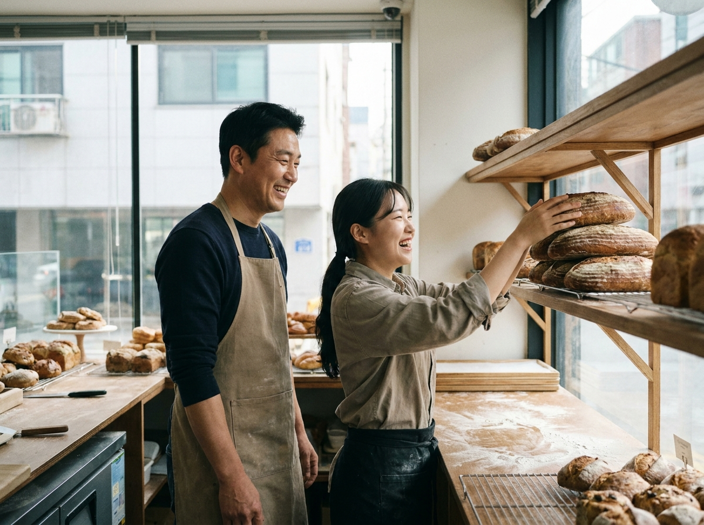

직원 둔 소상공인, 국민연금·고용보험료 80%까지 국가가 지원하는 제도가 있습니다
직원을 둔 소상공인이라면 국민연금과 고용보험료의 상당 부분을 국가가 대신 부담해 주는 제도가 있습니다. 근로복지공단이 운영하는 두루누리 사회보험료 지원입니다. 상시 근로자 10명 미만 사업장에서 새로 가입한 저소득 근로자와 그 사업주에게 보험료의 80%까지, 최대 36개월간 지원합니다. 최저임금과 4대보험 부담이 함께 오르는 시기에, 직원을 두고 매장을 운영하는 사장님이라면 반드시 확인해 볼 제도입니다.

두루누리 사회보험료 지원, 한 줄로 정리하면
두루누리는 규모가 작은 사업장의 사회보험 사각지대를 줄이기 위한 제도입니다. 근로자가 국민연금·고용보험에 새로 가입할 때 발생하는 보험료 부담을, 근로자 부담분과 사업주 부담분 각각에 대해 일정 비율 지원해 줍니다. 직원 입장에서는 실수령액이 덜 줄고, 사장님 입장에서는 인건비에 따라오는 4대보험 부담이 가벼워지는 구조입니다.
신청과 조회는 공식 사이트 insurancesupport.or.kr(근로복지공단) 에서 할 수 있습니다. 제도의 자격 요건과 지원 금액은 해마다 바뀔 수 있으므로, 실제 신청 전에는 반드시 이 공식 사이트에서 최신 기준을 확인하시기 바랍니다.
누가 받을 수 있나 — 지원 대상
지원 대상의 핵심 조건은 다음과 같습니다. 아래 내용은 기본 골격이며, 세부 자격은 연도별로 달라질 수 있으니 공식 확인이 필요합니다.
| 구분 | 기준 |
|---|---|
| 사업장 규모 | 상시 근로자 10명 미만 사업 |
| 근로자 보수 | 월평균 보수 270만원 미만 |
| 가입 조건 | 신규 가입 근로자와 그 사업주 |
| 지원 보험 | 국민연금·고용보험 |
| 지원 비율 | 보험료의 80% 지원(근로자·사업주 각각) |
| 지원 기간 | 최대 36개월 |
예를 들어 월 보수 약 230만원인 근로자의 경우, 월 약 108,560원 수준이 지원되는 것으로 안내됩니다. 다만 이 금액은 예시일 뿐이며, 실제 지원액은 보수 수준과 연도별 기준에 따라 달라집니다. 본인 사업장에 적용되는 정확한 금액은 두루누리 공식 사이트에서 조회하시는 것이 정확합니다.
왜 지금 챙겨야 하나
최저임금이 오르고 4대보험 부담이 함께 늘면서, 직원 한 명을 두는 데 드는 실제 인건비는 급여 액수보다 큽니다. 두루누리는 그중 국민연금·고용보험 부담을 국가가 나눠 지는 제도라, 신규 채용을 앞두거나 이제 막 직원을 정식으로 4대보험에 가입시키려는 사장님에게 특히 도움이 됩니다.
핵심은 '신규 가입'이 조건이라는 점입니다. 이미 오래 가입된 근로자보다는 새로 가입하는 시점에 맞춰 신청 자격을 확인하는 것이 유리합니다. 지원 여부와 시점 판단이 애매하다면, 공단 상담을 통해 본인 사업장 상황을 확인해 보는 것이 좋습니다.
직원 둔 매장, 운영 관리도 같이 챙기세요
지원 제도로 인건비 부담을 덜었다면, 다음은 그 인건비가 제값을 하도록 매장을 관리하는 일입니다. 직원을 두고 운영하는 매장일수록 근태와 매출을 한눈에 정리해 두는 것이 인건비 관리의 기본이 됩니다.
누리네트웍스의 POS는 시간대별 매출과 메뉴별 판매를 자동으로 기록해, 언제 사람이 더 필요하고 언제 여유가 있는지 판단하는 데 도움을 줍니다. 주문이 몰리는 시간대에는 테이블오더나 키오스크로 주문·결제를 분산하면, 같은 인원으로도 회전을 높일 수 있습니다. 인건비를 줄이는 지원 제도와, 인건비 대비 효율을 끌어올리는 매장 시스템을 함께 갖추면 운영이 한결 단단해집니다.

신청 전 체크리스트
- 우리 사업장이 상시 근로자 10명 미만인지 확인
- 대상 근로자의 월평균 보수가 기준 이내인지 확인
- 신규 가입 요건에 해당하는지 확인
- 공식 사이트(insurancesupport.or.kr)에서 최신 지원 비율·금액·기간 확인
- 판단이 어려우면 근로복지공단에 상담 문의
자주 묻는 질문(FAQ)
Q. 두루누리는 어떤 보험을 지원하나요?
국민연금과 고용보험의 보험료를 지원합니다. 근로자 부담분과 사업주 부담분 각각에 대해 지원 비율이 적용됩니다. 구체적 범위는 공식 사이트에서 확인하세요.
Q. 지원 금액과 조건은 고정인가요?
아니요. 보수 기준, 지원 비율, 지원 기간 등은 연도별로 바뀔 수 있습니다. 이 글의 숫자는 안내용 예시이므로, 반드시 두루누리(insurancesupport.or.kr)·근로복지공단에서 최신 기준을 확인하시기 바랍니다.
Q. 이미 직원이 있는데도 받을 수 있나요?
제도는 신규 가입 근로자와 그 사업주를 대상으로 합니다. 본인 사업장의 가입 상황에 따라 적용 여부가 다르므로, 공단 상담을 통해 확인하는 것이 정확합니다.
Q. 매장 POS로 인건비 관리는 어떻게 도움이 되나요?
POS로 시간대별 매출과 근태를 정리하면 필요한 인원을 판단하기 쉽고, 테이블오더·키오스크로 주문을 분산하면 같은 인원으로 회전을 높일 수 있습니다. 도입 상담은 누리네트웍스로 문의하세요.
직원을 두고 매장을 운영하는 사장님이라면, 두루누리로 인건비 부담을 덜고 매장 시스템으로 운영 효율을 함께 잡으세요. POS·결제단말·키오스크·테이블오더 도입이 고민된다면 수도권 직영 대리점 누리네트웍스가 상담해 드립니다.
- 📞 전화상담 1544-7754
- 🌐 홈페이지 nwpos.co.kr